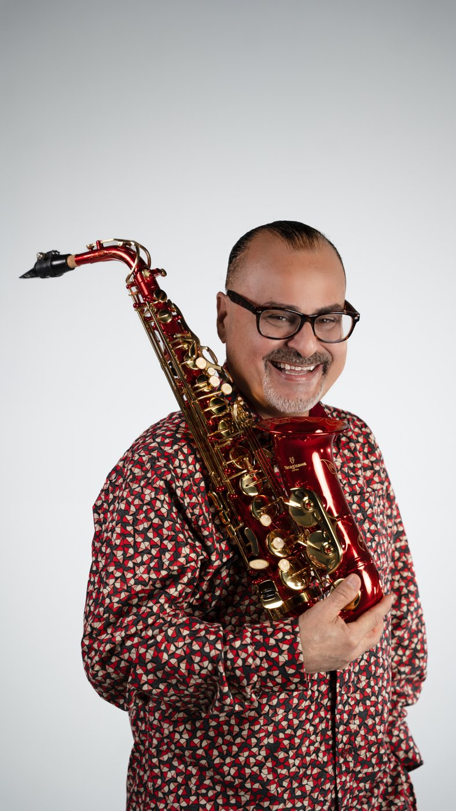
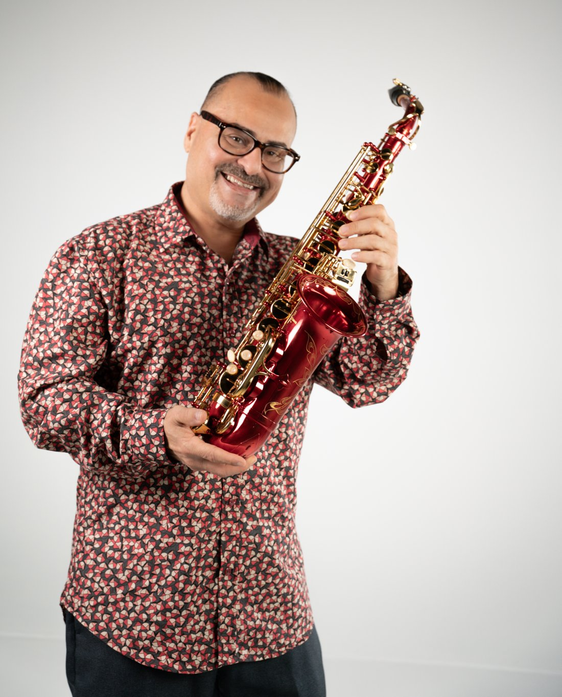

0:00 / 0:00
Bendecido por Dios, bendecido para bendecir.
Más de 25 años de trayectoria — del Madison Square Garden y 19 años con Grupo Manía, a una nueva etapa de música instrumental cristiana donde el saxofón se convierte en oración.


Nacido en Chicago y criado en Vega Baja, Jimmy Baruc descubrió su pasión a los 12 años, cuando tomó un saxofón por primera vez. Esa pasión lo llevó a obtener bachilleratos en Saxofón y en Educación Musical en la Universidad de Puerto Rico, Recinto de Río Piedras.
Durante casi tres décadas dejó su huella en la música latina: director musical y saxofonista de Willie Berríos, Giselle y Grupo Manía —agrupación con la que permaneció 19 años— además de colaborar con Wilfrido Vargas, Roberto Roena y Los Sabrosos del Merengue. Su talento lo llevó a tarimas como el Madison Square Garden, el Coliseo de Puerto Rico, el Centro de Bellas Artes y el House of Blues.
Hoy comienza la etapa más personal de su carrera: su primera producción, «Bendecido por Dios, Bendecido para Bendecir», lleva el mensaje de la fe a través de interpretaciones instrumentales en saxofón — un ministerio musical para iglesias y escenarios dentro y fuera de Puerto Rico.
Su primer álbum cristiano se revela por etapas, sencillo a sencillo. Cada tema es un testimonio convertido en saxofón.
Una palabra nueva cada día.
Dónde encontrar a Jimmy en vivo. ¿Quieres traerlo a tu iglesia o evento?
Disponible para servicios, conciertos, congresos y actividades especiales — en iglesias y escenarios dentro y fuera de Puerto Rico.
Cuéntanos sobre tu evento y te contactamos pronto.
O escríbenos directo por Instagram
Su nueva etapa ha sido reseñada por los principales medios de Puerto Rico.
Galería — añade fotos profesionales de conciertos y estudio editando el arreglo GALLERY en el código.
Descarga la hoja de prensa con biografía, trayectoria, sencillos y contacto — lista para compartir con medios y organizadores.